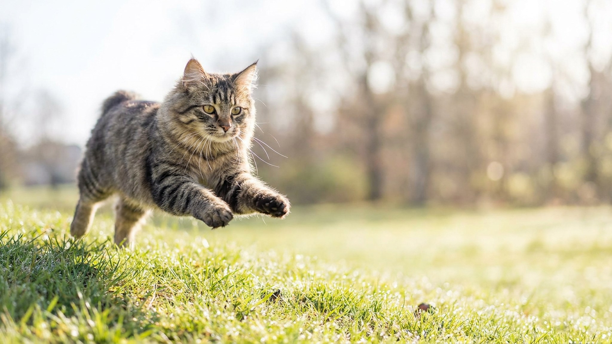

Первый раз видишь хайлендера — думаешь, что кто-то притащил рысёнка из леса. Загнутые назад уши, массивная голова, короткий хвост-куцый — и при этом кот лезет на руки, как лабрадор. Highlander — порода молодая (США, 2004), но уже собрала фанатов за редкое сочетание: дикая внешность и почти собачья привязанность к хозяину. Ниже — всё, что нужно знать перед тем, как завести.
🐾 У вас хайлендер?
AnimaLife соберёт уход под породу: к каким болезням есть склонность, что проверять по возрасту, чем кормить и когда пора к врачу. Бесплатно, прямо в мессенджере.
Собрать план ухода → Собрать в MAX →
У вас iPhone? AnimaLife есть в App Store
Хайлендер — одна из немногих пород, которую ветеринарные зоопсихологи описывают словом «собачий». Кошка ходит за хозяином по квартире, встречает у двери, легко обучается командам вроде «ко мне» и «апорт». При этом не навязчива: умеет «выключиться» и лечь рядом, не требуя внимания.
Загнутые назад уши (curl-back) — главная визитная карточка Highlander. Важно: они не прижаты и не болят. Это особенность хряща, а не стресс. Котята рождаются с прямыми ушами — завиток формируется к 3–4 неделям.
Уши требуют еженедельной проверки: из-за особой формы ушного канала там может скапливаться загрязнение. Чистить мягким лосьоном — по рекомендации ветеринара.
Хайлендер бывает короткошёрстным и длинношёрстным. Короткошёрстный требует расчёски раз в неделю, длинношёрстный — 2–3 раза в неделю, иначе образуются колтуны за ушами и под мышками.
Хайлендер плохо переносит одиночество: если хозяин целый день на работе, кошке нужен компаньон — другая кошка или даже спокойная собака. Порода хорошо уживается с детьми школьного возраста, которые умеют обращаться с животными.
Кому подходит хайлендер:
Кому не подходит: людям, которые хотят тихую независимую кошку «для красоты». Хайлендер требует вовлечённости.
Здоровье породы в целом крепкое — специфических наследственных заболеваний пока не описано. Стандартные профилактические осмотры раз в год, вакцинация и обработка от паразитов по графику — этого достаточно. Любые вопросы по здоровью обсуждайте с ветеринаром.
Материал носит информационный характер и не заменяет очную консультацию ветеринара.
🐾 Ваш питомец — хайлендер?
Заведите профиль в AnimaLife: приложение запомнит породу, возраст и вес и будет подсказывать по уходу именно для неё. Вопросы AI-ветеринару — круглосуточно и бесплатно.
Завести профиль → Завести в MAX →
У вас iPhone? AnimaLife есть в App Store
🐾 Понравился разбор?
Подпишитесь на канал — каждый день разбираем по одному тревожному симптому у кошек и собак: что в пределах нормы, а когда пора к врачу. Подпишитесь, чтобы не пропустить разбор, который может спасти здоровье вашего питомца.